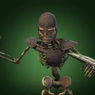

Unit
Drowned Wailer
Drowned Wailer is a tier 2 caster unit of the Drowned, Cutthroat and Venomist alliances.
Drowned Wailer is a tier 2 (Uncommon) caster unit. It costs 2 gold in the shop and carries the Drowned, Cutthroat and Venomist alliances.
Ability
Drowning Wail
Lets out a drowning wail that deals magical damage to all enemies within 3 cells.
- Cast
- When mana is full. Casting spends all of it.
- Cast point
- 0.6 seconds from the start of the cast to its effect.
- Targets
- All enemies within 3 cells of itself.
- Deals 200 / 300 / 400 magical damage to the targets (values per star).
Full details are on the Drowning Wail ability page. See Mana and casting for how mana is gained.
Stats
| Stat | 1 star | 2 stars | 3 stars |
|---|---|---|---|
| Health | 825 | 1,650 | 3,300 |
| Attack damage | 55 to 60 | 110 to 120 | 220 to 240 |
| Seconds per attack | 1.2 | 1.2 | 1.2 |
| Attacks per second | 0.83 | 0.83 | 0.83 |
| Wind-up before the hit (seconds) | 0.56 | 0.56 | 0.56 |
| Average damage per second | 47.9 | 95.8 | 191.7 |
| Attack range (cells) | 3 | 3 | 3 |
| Armour | 5 | 5 | 5 |
| Magic resistance | 0% | 0% | 0% |
| Maximum mana | 60 | 60 | 60 |
| Move speed | 290 | 290 | 290 |
| Seconds to cross one cell | 0.44 | 0.44 | 0.44 |
| Projectile speed (cells per second) | 11.7 | 11.7 | 11.7 |
Seconds per attack is the time from the start of one attack to the start of the next, before any attack speed bonus. Average damage per second is the middle of the damage range divided by the seconds per attack, before armour, bonuses and critical strikes.
Cost, upgrades and selling
3 copies of Drowned Wailer at the same star level combine into one copy of the next star level, up to 3 stars. See Star upgrades for how combining works and Gold and income for gold.
| 1 star | 2 stars | 3 stars | |
|---|---|---|---|
| Copies needed | 1 | 3 | 9 |
| Gold to buy those copies | 2 | 6 | 18 |
| Sell value in gold | 2 | 4 | 6 |
| Copies returned to the pool when sold | 1 | 3 | 9 |
The shared pool holds 20 copies of Drowned Wailer for all players together, as it does for every tier 2 unit. See The shared pool and The shop.
Alliances
 Drowned race
Drowned race
Folk of the flooded undercity, slick with black water. All allies gain magic resistance.
| Units needed | Effect |
|---|---|
| 2 | All allies: +30% magic resistance. Allies summoned later in the fight get this too. |
| 4 | All allies: +55% magic resistance. Allies summoned later in the fight get this too. |
 Cutthroat class
Cutthroat class
Knife-work in the dark. Cutthroats gain a chance to critically strike, and a critical strike wounds the target, reducing its healing received for 3 seconds.
| Units needed | Effect |
|---|---|
| 3 | Cutthroat units: +15% critical strike chance, critical strikes deal 325% damage instead of the usual 200%. When a Cutthroat unit lands a critical strike, it applies Wounded (Cutthroat, 3 units) (-75% healing received) to the unit it hit for 3 seconds. |
| 6 | Cutthroat units: +25% critical strike chance, critical strikes deal 400% damage instead of the usual 200%. When a Cutthroat unit lands a critical strike, it applies Wounded (Cutthroat, 6 units) (-100% healing received) to the unit it hit for 3 seconds. |
 Venomist class
Venomist class
Every attack from a Venomist adds a stack of venom to the target. Each stack reduces attack speed by 7.
| Units needed | Effect |
|---|---|
| 3 | When a Venomist unit lands an attack, it applies a stack of Venom (-7% attack speed, stacks up to 99 times) to the unit it hit for the rest of combat. |
How units are counted towards a step is explained under How alliances count.
Fights well with
These units share an alliance with Drowned Wailer, so fielding them together works towards the same steps.


Other tier 2 units
The other tier 2 units. They cost the same and share the same tier odds. Within the tier, a unit with more copies left in the pool is offered more often. See The shop and the Unit stat table.
 Banner Squire
Banner Squire Chainwarden
Chainwarden Cog Sapper
Cog Sapper Gate Duelist
Gate Duelist Hellblade Reaver
Hellblade Reaver Jade Drakeling
Jade Drakeling Marsh Hag
Marsh Hag Night Sentinel
Night Sentinel Oathkeeper Thane
Oathkeeper Thane Quillback
Quillback
Riftlance Duelist Saw Rigger
Saw Rigger Thorn Caller
Thorn Caller